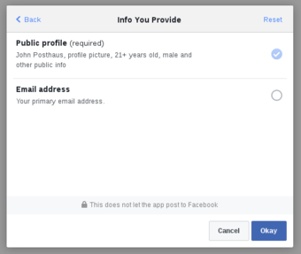
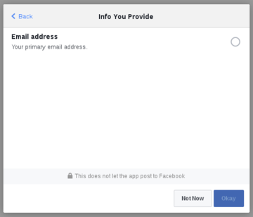

Make email permission required when signing in with Facebook
Posted on August 21, 2016 in Dev • 3 min read
If your software uses Facebook login you know that users can grant or decline permissions. The public_profile is default and you can get basic info about the user, such as user's name for example.
You can also request more permissions in the scope. One very useful is email permission, which gives you access to user primary email. The thing about email is, the user doesn't need to allow an app to access this data.

As you can see, any additional permission can be declined by users. If you want the email, you can have another problem:
Even if you request the email permission it is not guaranteed you will get an email address. For example, if someone signed up for Facebook with a phone number instead of an email address, the email field may be empty.
In this case, you will need to deal with this scenario in another way. The best solution is to ask user email after signup. But today we want to make the email (or any other permission) required.
The trick is, if the user declines some permission, you can ask it again. You can explain why some permission is required, and then redirect the user to Facebook again.
For example, the URL below open the dialog above, requesting public_profile and email.
If the user declines some permission we can ask it again using the URL below.
And the result will be as below.

As you can see, the user can't proceed without granting permission to email. This is done by auth_type=rerequest parameter, which requests the permission again.
In practice, it will work like the example below. I'm using Tornado 4.4, but you can do this in most languages that have support for Facebook OAuth.
import logging
import tornado.auth
import tornado.ioloop
import tornado.web
from base64 import b64encode, b64decode
from tornado.concurrent import return_future
FACEBOOK_ID = 'YOUR ID HERE'
FACEBOOK_SECRET = 'YOUR SECRET HERE'
FACEBOOK_REDIRECT_URI = 'http://localhost:8888/login'
logging.basicConfig(format='%(levelname)s - %(asctime)s - %(module)s: %(message)s', level=logging.DEBUG)
logger = logging.getLogger()
class FacebookOAuthException(Exception):
pass
class MainHandler(tornado.web.RequestHandler):
def get(self):
user = self.get_cookie('user')
if user:
user = b64decode(user)
logger.info('User logged in.')
email = self.get_cookie('email')
if email:
self.write('Hello, %s. Your primary email on Facebook is %s.' % (user, b64decode(email)))
else:
self.write('Hello, %s. Your account has no email associated.' % user)
else:
logger.info('User not logged in.')
self.redirect('/login')
class FacebookLoginHandler(tornado.web.RequestHandler, tornado.auth.FacebookGraphMixin):
@tornado.gen.coroutine
def get(self, *args, **kwargs):
if self.get_argument('code', False):
# User logged in. get user data.
logger.info('Getting user data...')
data = yield self.get_authenticated_user(redirect_uri=FACEBOOK_REDIRECT_URI,
client_id=FACEBOOK_ID,
client_secret=FACEBOOK_SECRET,
code=self.get_argument('code'),
extra_fields=['email', 'permissions'])
# Check if user allow us to get his email.
logger.info('Validating user permissions...')
permissions = data.get('permissions', {}).get('data', [])
permission = next(p for p in permissions if p.get('permission') == 'email')
if permission:
granted_access = permission.get('status') == 'granted'
else:
# Opss!
raise FacebookOAuthException('Missing permission from facebook request.')
if granted_access:
# Everything is OK. move on.
logger.info('Access granted.')
yield self._on_auth(data)
else:
# If user don't grant access to email, keep it on facebook login page until he allow it.
# We need to pass 'auth_type' as 'rerequest' for this work.
logger.info('Access declined. Re-request...')
yield self.authorize_redirect(redirect_uri=FACEBOOK_REDIRECT_URI,
client_id=FACEBOOK_ID,
scope=['email'],
extra_params={'auth_type': 'rerequest'})
else:
# User not logged in, request authorization.
logger.info('Requesting user authorization...')
yield self.authorize_redirect(redirect_uri=FACEBOOK_REDIRECT_URI,
client_id=FACEBOOK_ID,
scope=['email'])
@return_future
def _on_auth(self, facebook_data, callback):
# TODO: Use secure cookie, persist somewhere, but don't do this in prodution.
name = facebook_data.get('name')
email = facebook_data.get('email')
self.set_cookie('user', b64encode(name))
if email:
self.set_cookie('email', b64encode(email))
# Logged in. go back to home.
self.redirect('/')
callback()
def make_app():
return tornado.web.Application([
(r'/', MainHandler),
(r'/login', FacebookLoginHandler),
], debug=True)
if __name__ == '__main__':
app = make_app()
app.listen(8888)
logger.info('Server running at http://localhost:8888/')
tornado.ioloop.IOLoop.current().start()
Reference